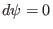
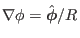
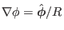

Relation between Jacobian and poloidal angle

In
 coordinates, a line element is written
coordinates, a line element is written
The line element that lies on a magnetic surface (i.e.,
) and on a
poloidal plane (i.e.,
) is then written
|
 |
|
|
| |
|
|
(186) |
We use the convention that  and
and  take the same sign, i.e.,
take the same sign, i.e.,
Using the fact that
 and
and
 is orthogonal and
, the above equation is written as
is orthogonal and
, the above equation is written as
Given
 , Eq. (188) can be used to
determine the coordinate of points on a magnetic surface.
, Eq. (188) can be used to
determine the coordinate of points on a magnetic surface.
yj
2018-03-09